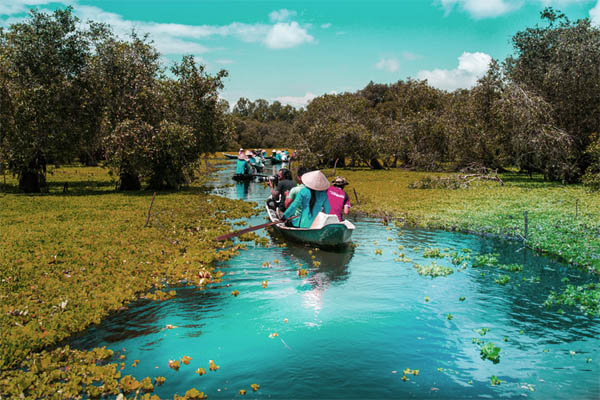

The Northwest region, Northwest region or simply Northwest is the western mountainous region of Northern Vietnam, sharing borders with Laos and China.
This is a mountainous and midland region with many massifs and limestone or dirt mountains such as Mau Son, Tam Dao, Dong Van Karst Plateau... with an average altitude of 100-1600m above sea level.
The Red River Delta concentrates many tourism resources, creating favorable conditions to develop rich and diverse types of tourism such as island tourism, cultural - spiritual tourism, community tourism, and tourism. Ecotourism, adventure sports tourism, countryside tours...
The North Central region is located on the narrowest strip of land in Vietnam, between the majestic Truong Son range on one side and the vast South-China Sea on the other.
Tourism in the South Central region is a harmonious combination of hills - mountains - forests - sea. This place possesses many wonders, majestic landscapes and poetic blue sea. This tourist destination is a meeting point for those who want to find the wild beauty of nature.
With a wide variety of interesting attractions coupled with unique cultural traits, the Central Highlands will be a great option for travelers looking for a new experience in Vietnam.
With a wide variety of interesting attractions coupled with unique cultural traits, the Central Highlands will be a great option for looking travelers for a new experience in Vietnam.

The Mekong Delta region is an ideal tourist destination associated with beautiful, rustic natural scenery. Traveling to the Southwest region helps visitors have relaxing experiences after busy working days.
Vietnam has two archipelagos off the coast of the South-China Sea: Hoang Sa and Truong Sa archipelagos. These are two typical archipelagos of the country and are an inseparable part of the territory